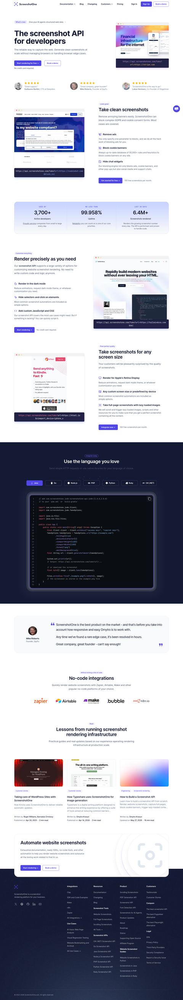
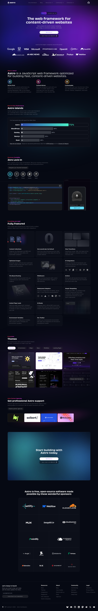
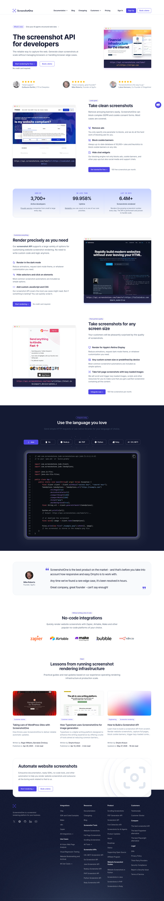

screenshotone-scroll-1
20.90s wall; 15.03s browser; 1440 × 7842

September 12, 2026. Images are real API results; HTTP success does not establish page correctness. Click to inspect original.
20.90s wall; 15.03s browser; 1440 × 7842

12.01s wall; 5.85s browser; 1440 × 8905

20.68s wall; 12.64s browser; 1440 × 7842

13.63s wall; 5.86s browser; 1440 × 8905